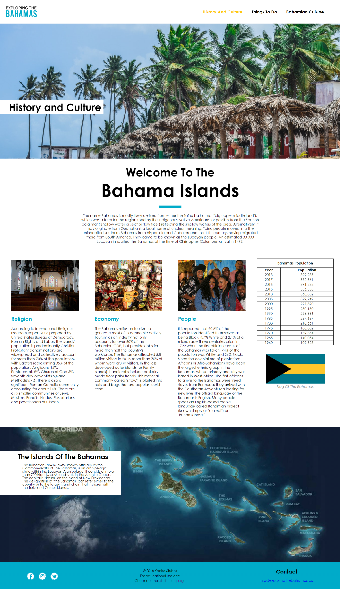

Exploring The Bahamas
VANCOUVER, BRITISH COLUMBIA. 2018. ROLE: SOLE DESIGNER.
The Bahamas is in every way a paradise. From the beaches to the food, people and culture, it is highly known to be one of the most amazing places to visit for vacation. I wanted to build a website that would portray this concept to users that are browsing through this website using bright, fun colors, like it's flag, and using a modern, clean and fresh layout and imagery to represent an aura of paradise.
TOOLKIT


Branding
I designed the logo to have a fresh, vibrant, and welcoming feel synonymous to the aura you feel when visiting the Bahamas. It is a common tourist destination known for its beaches, food, and friendly, welcoming citizens and I chose to illustrate this concept as well as a sense of modernity through its colors and font and leave a lasting impression on its viewers when visiting the page.
Color Palette
I used fun, vibrant, bright colors similar to the Bahamian flag to represent the country's resources, sun, sand, and sea, and black that represents its predominantly black Bahamian citizens.
#808080
#fff
#00ABC9
#ffc70f
Planning and Development
For planning and development, I sketched a few design mockups that I found helpful in helping me to figure out where everything on the website would lay before coding. This also helped me to figure out a more cohesive design structure and color palette instead of just laying everything out as I code. The website includes 4 pages including an attribution page.
Final Design
Responsive Design